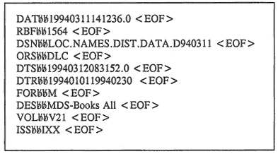

MARC Electronic File Transfer
Specifications
Network Development and MARC Standards Office
Library of Congress
The specifications for transfering files of MARC records
electronically assume the use of a standard protocol. The File
Transfer Protocol (FTP) is the most generally used. FTP can be
used in place of a physical exchange medium to move MARC
authority, bibliographic, classification, community information,
and holdings records from a storage device in an originating system
to a receiving system. These electronic file transfer
specifications were approved by the Library of Congress and the
MARC Advisory Group in June 1993.
The labels used with electronic file transfer, like tape and
diskette volume and file labels, communicate information from the
originating system to the receiving system. The labels identify
and characterize the transaction and the information contained in
the data that is being transferred electronically. The labels will
make possible an eye-readable display of the identifying
information and also enable machine processing of the
information.
Electronic Transfer File Organization
Each file of MARC records should be accompanied by a companion
label file containing bibliographic file and volume information.
The label and record file pair can be transferred separately or
they can be compressed (archived) into a single file for transfer
by the originating system. It is then up to the receiving system
to decompress (restore) the label and record file(s). The concept
of physical volumes does not apply to electronic transfers
as it does to exchange using dismountable physical media, but the
identification of volumes may be particularly useful with groups of
files compressed for transfer into a single file. Record blocking
is not used and individual records do not span files or
transfers. Large logical files of records can be segmented into
multiple physical files during separate transfers. The following
configurations may be used.
Uncompressed transfer Compressed transfer
Label File Compressed File
Bibliographic File Label File 1
Bibliographic File 1
Label File n
Bibliographic File n
Electronic Transfer Label Files
A file of MARC records is transferred electronically following
a label file that identifies and characterizes the file of MARC
records, and optionally, the volume to which it belongs.
NOTE: Volume information is not
transmitted in a separate file as is done with tape and diskette.
The label file is used to transfer non-MARC information between an
originating system and a receiving system. The label file is
written using only ASCII Latin characters. A label
file is required for each file of MARC records
transmitted.
Electronic Transfer File Names
These MARC specifications do not mandate the length or style
of file names due to differences between operating systems.
Exchange partners should agree upon file naming conventions prior
to transferring MARC records electronically.
Structure
A label file consists of a sequence of fixed-length and variable
fields. The order of fields should be the same as the list below.
The length of fixed-length fields is specified in the descriptions
of those fields. Variable length fields have no maximum length.
Each field in a label file begins with a three-character tag
followed by two blanks (ASCII character 2016). The
field's data content follows the two blanks. Each field ends with
a carriage return (ASCII control character hexadecimal OD) or a
carriage return/line feed pair (ASCII control characters
hexadecimal OD OA) immediately following the data in the field.
The end-of-field character (ASCII control character hexadecimal 1E)
is no longer used.
Certain fields in the label files are specified as mandatory and
must be present in each label file.
In these fields, data content or one fill character the vertical
bar ("|" - ASCII character 7C16), must be supplied.
Mandatory or optional characteristics of the fields are also noted
below. Several of the fields are repeatable.
Electronic Transfer File (and Volume) Labels Tags/Fields
The following order of the fields in the file label is mandatory whether or
not all fields are present
Mandatory Fixed/
Tag Element Name Description /Optional Variable Repeatable
DAT Date compiled YYYYMMDDHHMMSS.F M F NR
RBF Number of records Numeric M V NR
DSN Data Set Name Alphanumeric M V NR
ORS Originating sys ID Alphanumeric M V NR
CID Country ID Alphanumeric O F NR
DTS Date sent YYYYMMDDHHMMSS.F O F NR
DTR Dates of records YYYYMMDDYYYYMMDD O F NR
FOR Format Alphanumeric M F NR
FQF Format qualifier Alphanumeric O V NR
DES Description Alphanumeric O V R
CS0-n Character set 0-n Alphanumeric O V NR
CV0-n Set variations 0-n Alphanumeric O V NR
VOL Volume Alphanumeric O V R
ISS Issue Alphanumeric O V R
FDI Final Dest. ID Alphanumeric O V NR
REP Reply to Alphanumeric O V R
NOT Note Alphanumeric O V R
- DAT (Date compiled):
- Mandatory; Fixed length; Not repeatable. This is the date the originating
system completed the compilation of the file of records. This is not the date
of the creation of the records contained in the bibliographic file. The field
is recorded according to Representation for Calendar Date and Ordinal
Date for Information Interchange (ANSI X3.30) and Representations
of Local Time of the Day for Information Interchange (ANSI X3.43). The
date requires 8 numeric characters in the pattern yyyymmdd (4 for
the year, 2 for the month, and 2 for the day; right justified and zero filled).
The time requires 8 numeric characters in the pattern hhmmss.f (2 for
the hour, 2 for the minute, 2 for the second, and 2 for a decimal fraction
of the second, including the decimal point). The 24-hour clock is used.
- RBF (Number of records in file):
- Mandatory; Variable length; Non-repeatable. This element includes the number
of logical records contained in the file of MARC records.
- DSN (Data Set Name):
- Mandatory; Variable length; Not repeatable. The filename of the file of
MARC records (which is sent separately) for which this is a file label.
- ORS (Originating system ID):
- Mandatory; Variable length; Not repeatable. The name of the system that
compiled the files of records. This could be a symbol (e.g., OCLC or NUC)
or text.
- CID (Country identifier):
- Optional; Fixed length; Not repeatable. The country identifier of the system
that compiled the files of records. The identifier is taken from Codes
for representation of names of countries (ISO 3166).
- DTS (Date sent):
- Optional; Fixed length; Not repeatable. This is the date of transmission
of the file of MARC records. The field is recorded according to Representation
for Calendar Date and Ordinal Date for Information Interchange (ANSI
X3.30) and Representations of Local Time of the Day for Information Interchange
(ANSI X3.43). The date requires 8 numeric characters in the pattern yyyymmdd
(4 for the year, 2 for the month, and 2 for the day; right justified and zero
filled). The time requires 8 numeric characters in the pattern hhmmss.f
(2 for the hour, 2 for the minute, 2 for the second, and 2 for a decimal fraction
of the second, including the decimal point). The 24-hour clock is used.
- DTR (Dates of records):
- Optional; Fixed length; Not repeatable. This includes inclusive dates of
last transaction of the records in the file, i.e. the first and last date
recorded in the 005 fields of the file of records. The field is recorded according
to Representation for Calendar Date and Ordinal Date for Information Interchange
(ANSI X3.30). The date requires 16 numeric characters in the pattern yyyymmddyyymmdd
(4 for the year, 2 for the month, and 2 for the day for each date; right justified
and zero filled).
- FOR (Format):
- Mandatory; Fixed length; Not repeatable. This element designates the format
of the records, generally M for MARC. Other codes may be defined as needed
(e.g., Z for Z39.2 for copyright records).
- FQF (Format qualifier):
- Optional; Variable length; Not repeatable. This element provides additional
description of the format of the record file. For example, it may identify
a particular tag set/specification for MARC records or a particular DTD for
SGML records. For MARC formats, the content of the FQF field may be text of
a code from the list Z39.50
registered record syntaxes. For DTDs, the content is the identifier
in the DTD DOCTYPE element.
- DES (Description of records):
- Optional; Variable length; Repeatable. This element describes the records.
The data could be coded or describe a product name. (For example, OCLC uses
B for Bibliographic describing a data type; CDS may use a product name, such
as MDS-Books All.)
- CS0-n (Character set 0-n):
- Optional; Variable length; Not repeatable. These fields specify the character
sets (control and/or graphic) needed for processing the record data file.
The field content is text indicating a particular set (e.g., ISO 646-IRV,
ISO Registration #37, MARC, or a reference to a private character set). CS0
indicates at least the G0 set and CS1-n indicate other sets in the file.
- CV0-n (Character variation 0-n):
- Optional; Variable length; Repeatable. These fields are used in conjunction
with the CS fields and contain a textual description of the variations from
the set specified in the corresponding CSn field. Variations noted in this
field may be that the set: 1) was not used strictly according to the standard;
2) has options for some positions that need to be specified; or 3) has additional
characters in positions that are undefined in the standard.
- VOL (Volume):
- Optional; Variable length; Repeatable. This may be used if it is desirable
to assign a volume number when distribution of records is by subscription.
Each file within a subscription year may be given a volume and issue number.
- ISS (Issue):
- Optional; Variable length; Repeatable. This may be used if it is desirable
to assign a volume and issue number when distribution of records is by subscription.
Each file within a subscription year may be given a volume and issue number.
It may be combined with Volume (e.g., V1402).
- FDI (Final destination ID):
- Optional; Variable length; Not repeatable. This field would contain the
name or identifier of the final-destination database.
- REP (Reply to):
- Optional; Variable length; Repeatable. This field contains an address given
as a contact for problems/questions in transmission. It may include an Internet
or postal address.
- NOT (Note):
- Optional; Variable length; Repeatable. This field contains textual information
or messages about the file.
Electronic Transfer of MARC Label and Record Files
Each file is transferred electronically as a separate operation. If no compression
is involved, a label file should be transferred preceding the MARC record file
to which it relates. If label and record files have been compressed, the transfer
of all data can occur as a single operation to the receiving system. In this
case, the receiving system must process the compressed file to restore the label
and record file(s) as separate files.
Example of an electronic file transfer label file: ("<EOF>"
= end-of-field character)

Go to:
 Library of Congress
Library of Congress
Library of Congress Help Desk
(
12/31/2002
)